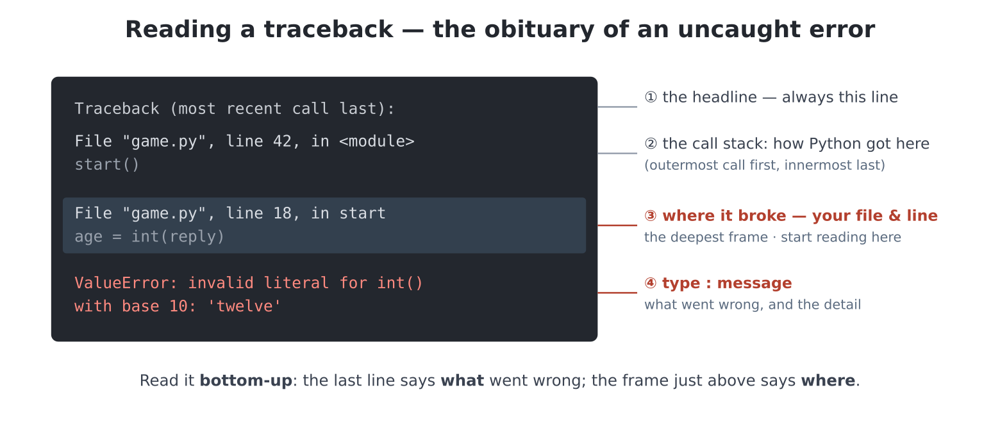

You have been reading error reports since chapter 3 and borrowing
try/except since chapter 12, always with an
IOU attached. This chapter pays every debt — and it teaches the half of
programming that nobody’s brochure mentions: real programming is mostly
dealing with wrongness, and the people you would call brilliant
programmers are, almost without exception, merely calm and systematic
about it.
Start by splitting “wrong” in two, because the halves need different tools:
twelve. These you
handle, with try/except.When something impossible is asked of it —
int("twelve"), 1/0, opening a file that isn’t
there — Python does not limp on with a wrong answer. It stops on the
spot and raises an exception: an alarm that travels up
out of function after function until something catches it — and
if nothing does, it reaches the surface as the traceback you have been
reading all book. That is all a traceback is: the obituary of an
uncaught exception.
You already know how to read one (deepest line naming your file; last line names the type). What is new today: the alarm can be caught.

try: the
safety netThe classic wound, open since chapter 6 — any program with
int(input(...)) dies instantly if a human types like a
human:
>>> age = int(input("How old are you? "))
How old are you? twelve
Traceback (most recent call last):
File "<stdin>", line 1, in <module>
ValueError: invalid syntax for integer with base 10: 'twelve'Here is the net:
while True:
reply = input("How old are you? ").strip()
try:
age = int(reply)
break
except ValueError:
print(f"'{reply}' isn't a number I know. Digits, please!")Read the flow carefully, because it is the feature. Python
runs the try block line by line. If nothing goes wrong, the
except block is skipped entirely (the break
escapes the loop). But the moment anything in the try
raises a ValueError, execution jumps to the
except block — no traceback, no death — and the program
carries on after it; here, the while True offers the human
another go. Type twelve, get a polite retort, type
12, play on.
This is so useful it should live in your toolbox forever.
edit a new library, handy.py:
# handy.py -- input that survives humans.
def ask_int(prompt):
"""Ask until the reply is a whole number; return it."""
while True:
reply = input(prompt).strip()
try:
return int(reply)
except ValueError:
print(f"'{reply}' isn't a whole number -- try again.")Every int(input(...)) in every program you have written
— the dojo, the guessing game, the converter — can now be
handy.ask_int(...), and that whole class of crash is
extinct on your machine.
Coming from MMBasic:
try/exceptisON ERROR SKIP/ON ERROR IGNOREgrown up — instead of muffling whatever the next line does, you declare exactly which trouble you expect, over exactly which lines, and what to do instead.MM.ERRNO-style detail is theas eform, two sections down.
An except names the exception it is prepared to handle,
and this is a point of professional honour: catch what you
expect, let the rest crash. You could write a bare
except: that catches anything — and you will
regret it, twice. Once because it swallows your own bugs (a typo inside
the try now silently “handles” its own
NameError, and you stare at a program that does nothing
wrong and nothing at all). And once because it even swallows
Ctrl-C — a bare except: around a loop
makes a program you cannot interrupt. The stuck-program lesson
of chapter 5 suddenly has a monster in it; do not build the monster.
Name one, name several, or stack them:
try:
points, name = line.strip().split(",")
scores.append((int(points), name))
except ValueError:
print("skipping a malformed line")
except OSError:
print("file trouble -- is the SD card in?")And now chapter 12’s borrowed incantation can be read in full.
scorelib.load wrapped its file-reading in try:
… except OSError: pass — meaning: the one failure I
consider normal here is the file not existing (first ever run), and my
handling is: start with an empty list. pass is Python
for “do nothing, on purpose”. One line of philosophy: an exception
handler is a decision about what failure means, made in
advance, by you.
as eThe exception carries its message; as catches the object
so you can use it:
try:
with open(path) as f:
data = f.read()
except OSError as e:
print(f"Couldn't read {path}: {e}")Your report is now specific (“Couldn’t read /sd/data.txt: [Errno 2] ENOENT”) without being fatal. Kinder than a traceback, more honest than silence.
raise: sounding the
alarm yourselfExceptions are not the interpreter’s private privilege. When your function is handed nonsense, the right move is usually not to soldier on but to raise:
def polygon(t, sides, size=60):
if sides < 3:
raise ValueError(f"a polygon needs 3+ sides, got {sides}")
for _ in range(sides):
t.forward(size)
t.right(360 / sides)Consider what happens without the guard.
polygon(t, 0)? The loop runs zero times — the function
silently draws nothing, no alarm at all, and twenty
minutes later you are debugging an empty screen.
polygon(t, 2)? The turtle walks out and straight back — an
invisible smear. Nonsense in, silence out: the worst kind of wrong,
because nothing points at it. The guard converts silent nonsense into an
immediate, plain-language report at the exact call that caused it. Every
mysterious misbehaviour a library ever showed you was somebody choosing
not to write this guard; every clear error, somebody who did.
(This is also the moment raise ValueError stops being magic
words: exceptions are made things, raised by code, catchable by
name.)
Every error type you have met, and the usual culprit — the chapter’s reference table, worth a corner of your desk:
| Alarm | Usual cause | First move |
|---|---|---|
SyntaxError |
missing : or bracket; = where
== belongs |
look at and before the pointed line |
IndentationError |
wrong indent; tabs/spaces mixed | re-indent with Tab/Shift-Tab |
NameError |
typo, wrong Capitals, or used before created | read the name in the message letter by letter |
TypeError |
mixing kinds — usually a forgotten int(input(...)) |
trace where the value was born |
ValueError |
right kind, impossible value — int("twelve") |
validate, or catch and retry |
IndexError |
position ≥ len — off-by-one, or empty list |
print the list and the index first |
KeyError |
dictionary key absent — often a typo’d key | print the dict’s keys; check with in |
OSError |
file/SD trouble — wrong path, missing file, card out | ls() the folder; check the mode |
AttributeError |
right dot, wrong thing — "text".append(...) |
check what the variable actually holds |
KeyboardInterrupt |
you pressed Ctrl-C | that one’s yours |
The pattern across the whole table: the message names the culprit — a name, a key, a type, a path. The cure starts with believing it.
No alarm, wrong answer — the program is lying to you politely. Here is a real hunt, start to finish. The suspect:
def average(numbers):
total = 0
for i in range(1, len(numbers)):
total += numbers[i]
return total / len(numbers)
print(average([80, 90, 100]))It prints 63.333... — no crash, but you know three
students who average 90. The method, step by step:
1. Reproduce it small. Three numbers already does it. (A bug you can summon on demand is half-caught; a bug in a 300-line game gets extracted into a five-line summons like this one.)
2. Interrogate the state. print is the
debugger you always have. Put one inside the loop:
for i in range(1, len(numbers)):
print("visiting position", i, "value", numbers[i])
total += numbers[i]Run: visiting position 1 value 90,
visiting position 2 value 100 — and there it is,
confessing: position 0 was never visited. The 80 never joined
the total: 190 ÷ 3.
3. Fix the cause, not the symptom. The lazy patch
(add 80!?) dies with the next list. The cause:
range(1, ...) — someone thought positions start at 1.
Chapter 10 knew better; make it range(len(numbers)). Better
still, remove the habitat: positions were never needed —
for n in numbers:
total += nThe idiomatic loop has no room for the off-by-one to live in. That is a general truth worth framing: the simpler form isn’t just prettier; it has fewer places for bugs to hide.
4. Retest — including what already worked. Then take
the prints out. (Ctrl-P comments them in a keystroke if
you’d rather keep them handy.)
Two more habits complete the kit. Change one thing at a time — alter two and the retest tells you nothing. And when truly stuck, explain the code aloud, line by line, to anything with a face — the bug is usually heard on the way out of your own mouth. Programmers call it rubber-ducking; it is embarrassing exactly once.
Take three programs you own and make them survivor-grade — the errors of the world handled, the habits of chapter 13 applied:
OSError. Catch it in
read_diary and print
"(the diary is empty -- write something!)" instead.scorelib: experiment 4 scarred it —
one malformed line kills load. Move a
try/except ValueError inside the loop
so a bad line is skipped, counted, and reported
("warning: skipped 1 bad line") while the good lines
survive. Decide — deliberately, in a comment — why skipping beats
crashing here (or argue the reverse: a corrupted score file might
deserve a loud death; the point is that you now make that
call).int(input(...)) for handy.ask_int(...), and
try to type it to death.Test each the honest way: be the hostile world. Missing
files, empty files, twelve, a pulled SD card, Enter mashed
on its own. When you cannot crash your own program, promote it.
try/except), the
program’s failures are hunted (the method).try runs until trouble; the
named except catches it; life continues after the block.
Retry loops come from wrapping the pair in while True.except: swallows bugs and Ctrl-C alike. as e
keeps the details for your report.raise ValueError("...") guards your
own functions — clear errors are a courtesy the author of a library pays
the caller.ask_int fussier: an optional low and
high (chapter 11 defaults), re-asking outside the range.
The dojo and the guessing game both want this immediately.while True: / try: input("> ") /
except: pass — run it, try Ctrl-C, fail, and press RESET
(chapter 2’s escape hatch, files unharmed). Now rewrite it with
except ValueError: and watch Ctrl-C work again. Ten
minutes, lifelong conviction.sides < 3 guard to your real
shapes.py. First, though, run the unguarded
polygon(t, 0) and polygon(t, 2) and watch
exactly nothing tell you anything is wrong. Then add the guard and run
them again. Which version would you rather be using at line 400 of a
game?scorelib. Savour it.+ - * /), any input survivable:
twelve, an unknown operator, dividing by zero — each with
its own message, all in a re-asking loop. Bonus: q quits
(which input? both? all three? design it).cards.txt
(chapter 12’s flashcards): reads every line, reports each problem
with its line number ("line 7: no comma"), and
ends "3 problems" or "all 40 cards ok". This
is a real tool — data files rot, and validators are how grown-up
software notices./bugs.txt (chapter 12 knows how) before fixing it. Read it
on day seven: your personal rogues’ gallery, which is the one
that matters.